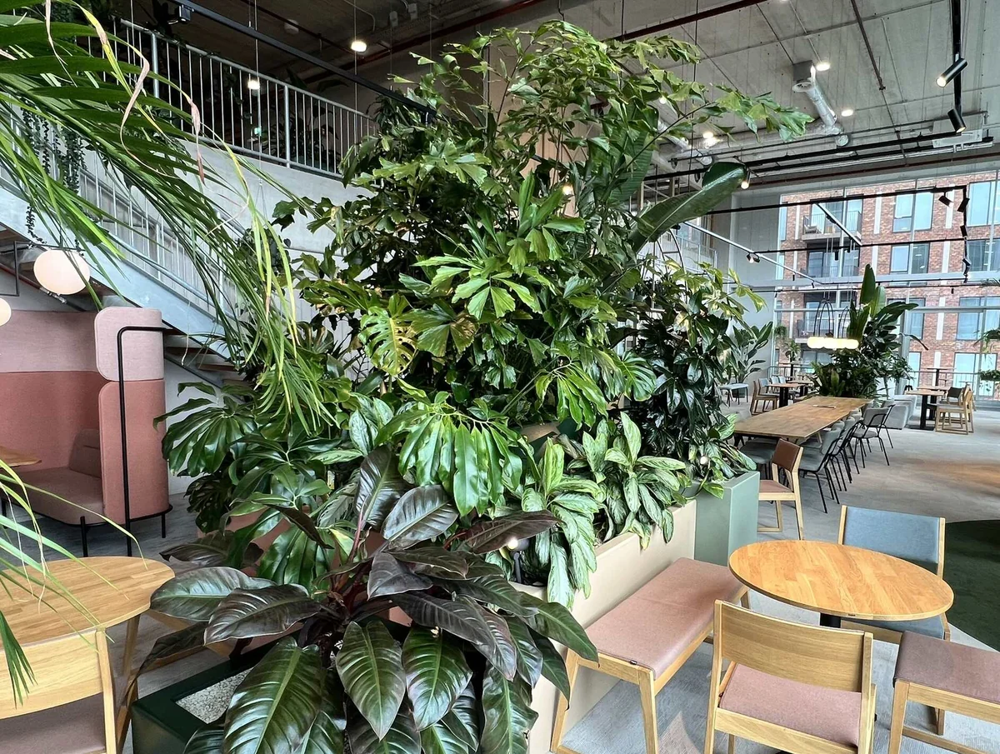

Planten op kantoor
Planten op kantoor: 7 sterke keuzes voor meer sfeer en een prettige werkplek

Een kantoor kan functioneel helemaal kloppen en toch wat kaal of onpersoonlijk aanvoelen.
Juist dan kunnen planten veel doen.
Niet omdat een paar planten ineens het binnenklimaat oplossen, maar omdat groen een ruimte zachter maakt, sfeer toevoegt en kan helpen om werkplekken, overlegzones en ontmoetingsplekken prettiger van elkaar te scheiden.
Voor mij zijn planten daarom geen decoratie die je aan het einde nog ergens neerzet. Ik neem ze liever mee als onderdeel van het interieurontwerp.
De vraag is alleen: welke planten zijn geschikt voor een kantoor?
Niet iedere plant kan goed tegen weinig daglicht, droge lucht of een weekend zonder water. Daarom zijn onderhoud, standplaats en formaat minstens zo belangrijk als hoe mooi een plant eruitziet.
Wat voegen planten toe aan een kantoor?
Planten hebben vooral invloed op hoe we een ruimte ervaren.
Een Nederlands onderzoek bij negen organisaties liet zien dat medewerkers een werkruimte met planten onder andere aantrekkelijker beoordeelden en meer tevreden waren over hun werkplek. Ook werd een hoger gevoel van privacy gemeten en waren er minder klachten over droge lucht. Voor directe effecten op bijvoorbeeld concentratie, stress en functioneren waren de uitkomsten minder overtuigend.
Dat past eigenlijk goed bij hoe ik planten in een kantoor gebruik.
Ze kunnen bijdragen aan:
- een warmere en minder zakelijke uitstraling
- meer visuele rust
- een zachtere overgang tussen verschillende werkzones
- een prettiger ontvangst voor bezoekers
- een betere balans tussen harde materialen zoals glas, beton en staal
- meer identiteit en sfeer in de werkomgeving
Groen werkt vooral goed wanneer het onderdeel is van het totale plan.
Een grote plant naast een zitbank kan bijvoorbeeld een informele overlegplek markeren. Een plantenbak tussen werkplekken kan zorgen voor meer visuele afscheiding. En een aantal grotere planten in de ontvangst kan een vrij zakelijke ruimte direct vriendelijker maken.
Zuiveren planten de lucht op kantoor?
Hierover bestaan nogal wat verhalen.
Onder laboratoriumomstandigheden kunnen bepaalde planten stoffen uit de lucht opnemen. Maar daarvoor worden vaak kleine, afgesloten onderzoeksruimtes gebruikt.
In een normaal kantoor met ventilatie en luchtverversing is het effect van een gebruikelijke hoeveelheid kamerplanten op de luchtkwaliteit klein. Goede ventilatie, voldoende verse lucht en goed onderhouden klimaatinstallaties zijn daarvoor veel belangrijker.
Planten moeten dus niet worden gezien als vervanging van ventilatie.
Dat maakt ze niet minder interessant.
Hun grootste waarde zit voor mij in sfeer, ruimtelijke kwaliteit en de manier waarop medewerkers de werkplek ervaren.
Welke planten zijn geschikt voor kantoor?
Bij het kiezen van kantoorplanten kijk ik vooral naar vier dingen:
- hoeveel daglicht er aanwezig is
- hoeveel onderhoud mogelijk is
- hoeveel ruimte de plant krijgt
- welke rol de plant binnen het interieur heeft
Een plant op een kast vraagt iets anders dan een grote plant die een overgang tussen twee werkzones moet maken.
Dit zijn zeven soorten die in kantooromgevingen vaak goed toepasbaar zijn.
1. Zamioculcas, de sterke allrounder
De Zamioculcas, ook wel ZZ plant genoemd, is voor een kantoor bijna ideaal.
De plant heeft stevige, glanzende bladeren en kan goed omgaan met periodes waarin hij wat minder aandacht krijgt. Hij heeft relatief weinig water nodig en verdraagt ook plekken waar niet de hele dag veel daglicht aanwezig is.
Daardoor werkt hij goed in:
- werkruimtes
- vergaderruimtes
- ontvangstruimtes
- directiekamers
- informele overlegplekken
Door zijn rustige vorm past de Zamioculcas bovendien goed in moderne kantoorinterieurs.
Mijn advies is om niet overal kleine exemplaren neer te zetten, maar liever een paar grotere planten bewust onderdeel te maken van het interieur.
2. Sansevieria, weinig onderhoud en een krachtige vorm
De Sansevieria herken je aan de lange rechtopstaande bladeren.
Het is een sterke plant die weinig water nodig heeft en relatief goed omgaat met verschillende lichtomstandigheden.
Juist door de verticale vorm is deze plant interessant in smalle plantenbakken.
Je kunt hem bijvoorbeeld gebruiken:
- tussen twee werkzones
- langs een wand
- naast een kast
- bij een entree
- als groene afscheiding
Een lange plantenbak met meerdere Sansevieria's kan veel rustiger ogen dan overal losse potten.
3. Kentia palm, voor hoogte en zachtheid
Een grote palm geeft direct meer volume aan een ruimte.
De Kentia palm heeft lange, elegante bladeren en werkt goed wanneer je een vrij strakke ruimte wat zachter wilt maken.
Hij heeft meer daglicht nodig dan bijvoorbeeld een Zamioculcas, maar hoeft niet in de volle zon te staan.
Ik gebruik grotere planten zoals deze vooral om hoogte toe te voegen.
Denk aan een grote plant:
- naast een loungehoek
- in een ruime ontvangst
- aan het einde van een zichtlijn
- bij een informele vergaderplek
In een grote ruimte werkt één plant van formaat vaak beter dan vijf kleine planten verspreid over kasten en vensterbanken.
4. Spathiphyllum, groen met een zachtere uitstraling
De Spathiphyllum, beter bekend als de lepelplant, heeft grote groene bladeren en witte bloemen.
De plant oogt wat zachter dan de Zamioculcas of Sansevieria en kan daardoor mooi passen in ontvangstgebieden, wachtruimtes en informele werkplekken.
Hij vraagt wel wat meer aandacht.
De potgrond mag niet langdurig uitdrogen en een volledig donkere hoek is geen goede standplaats.
Dat is meteen een belangrijk punt bij kantoorplanten.
Weinig daglicht betekent niet hetzelfde als geen daglicht.
Ook een sterke kantoorplant heeft licht nodig.
5. Ficus elastica, een sterk ruimtelijk accent
De rubberplant heeft grote, stevige bladeren en kan uitgroeien tot een behoorlijk formaat.
Daardoor is hij interessant wanneer een plant echt onderdeel moet worden van het ruimtelijke beeld.
Bijvoorbeeld:
- naast een maatwerkkast
- in een wachtruimte
- tussen zitgroepen
- naast een vergaderruimte
- in een ruime entree
De Ficus houdt van voldoende indirect daglicht en staat liever niet op een plek met veel tocht of grote temperatuurschommelingen.
Door zijn formaat kan hij goed werken als visueel tegenwicht in een kantoor met veel glas, beton of rechte lijnen.
6. Epipremnum, ideaal op kasten en hoge elementen
Niet al het groen hoeft op de vloer te staan.
De Epipremnum, ook bekend als pothos, is een hangende plant die goed werkt op hoge kasten, open vakkenkasten of plantenrekken.
De ranken kunnen naar beneden groeien en zorgen daardoor voor een lossere uitstraling.
Dat maakt deze plant interessant als je een vrij strakke maatwerkkast of wand wilt verzachten.
Een bijkomend voordeel is dat de Epipremnum relatief eenvoudig te onderhouden is.
Ook hier geldt wel dat voldoende daglicht nodig blijft.
7. Chlorophytum, luchtig en makkelijk toepasbaar
De Chlorophytum, of graslelie, heeft lange smalle bladeren en een vrij speelse uitstraling.
Hij kan goed worden toegepast in:
- plantenbakken
- open kasten
- hangende elementen
- informele werkruimtes
- lunchruimtes
Het is geen plant waarmee ik snel één groot statement zou maken.
Juist in een combinatie met andere planten kan hij goed werken, omdat hij een ander bladtype en een andere vorm toevoegt.
Waarom ik lavendel niet snel meer voor een kantoor zou adviseren
Voor een kantoor vind ik dat bij nader inzien niet de meest logische keuze.
Lavendel heeft veel direct zonlicht nodig en doet het binnen vaak minder goed dan planten die echt geschikt zijn als kamerplant.
Bovendien is geur heel persoonlijk.
Wat de ene medewerker prettig vindt, kan voor een ander juist storend zijn.
Ik zou daarom voor een kantoor eerder kiezen voor planten die langdurig goed functioneren en visueel iets aan de ruimte toevoegen.
Kies planten op functie, niet alleen op soort
De vraag is eigenlijk niet alleen:
Welke plant is geschikt voor kantoor?
Interessanter is:
Wat moet het groen op deze plek doen?
Een lege hoek vullen
Kies dan liever één grote plant dan verschillende kleine exemplaren.
Een Kentia palm of grotere Ficus kan hier goed werken.
Werkplekken visueel van elkaar scheiden
Gebruik een langwerpige plantenbak met een herhaling van dezelfde plant.
Sansevieria is daarvoor bijvoorbeeld geschikt.
Een maatwerkkast zachter maken
Gebruik hangende planten zoals Epipremnum of kleinere planten met verschillende bladvormen.
Een ontvangst warmer maken
Combineer één of twee grotere planten met een zorgvuldig gekozen plantenpot die aansluit op de materialen van het interieur.
Een overlegplek afbakenen
Een plantenbak kan helpen om een zitgroep of overlegplek herkenbaar te maken zonder direct een wand te plaatsen.
Zo wordt groen onderdeel van de indeling in plaats van losse aankleding.
Planten kunnen ook helpen bij zonering
In kantoorontwerpen probeer ik verschillende functies duidelijk herkenbaar te maken.
Waar wordt gewerkt?
Waar mag worden overlegd?
Waar kunnen medewerkers even zitten?
En waar ontvangen jullie bezoekers?
Dat hoeft niet altijd met wanden.
Een grote plantenbak kan bijvoorbeeld een subtiele overgang maken tussen werkplekken en een lunchruimte.
Een rij planten kan een looproute begeleiden.
En een grote plant kan een informele zitplek net iets meer beschutting geven.
Planten lossen een akoestisch probleem overigens niet op. Daarvoor zijn echte akoestische maatregelen nodig.
Maar ze kunnen wel bijdragen aan visuele privacy en een gevoel van meer beschutting.
Stem planten af op licht en verlichting
Een mooie plantenbak bedenken op een plek waar nauwelijks daglicht komt, heeft weinig zin.
Daarom kijk ik in een ontwerp altijd naar de combinatie van:
- daglicht
- kunstlicht
- positie ten opzichte van ramen
- temperatuur
- luchtstromen
- onderhoud
Een plek die op een plattegrond perfect lijkt, kan voor een plant ongeschikt zijn.
Andersom kun je een gebied bij een raam soms juist bewust gebruiken voor grotere beplanting.
Planten en verlichting moet je dus niet volledig los van elkaar zien.
Denk ook na over de plantenbak
De pot of plantenbak heeft veel invloed op het eindbeeld.
Een willekeurige verzameling potten kan een zorgvuldig ontworpen kantoor al snel rommelig maken.
Ik stem plantenbakken daarom het liefst af op:
- vloer
- wandkleuren
- meubilair
- houtsoorten
- huisstijl
- overige materialen
Dat hoeft niet te betekenen dat alle potten hetzelfde zijn.
Herhaling in kleur, materiaal of vorm kan al voldoende zijn om samenhang te creëren.
Juist daar zit het verschil tussen een paar planten neerzetten en groen echt onderdeel maken van een interieurconcept.
Hoeveel planten heeft een kantoor nodig?
Daar bestaat geen vaste formule voor.
Een kantoor van 300 m² hoeft niet automatisch een bepaald aantal planten te hebben.
Het hangt sterk af van:
- de indeling
- de hoeveelheid daglicht
- de aanwezige materialen
- de grootte van de planten
- het aantal ruimtes
- de gewenste uitstraling
In een rustig interieur kunnen enkele grote planten voldoende zijn.
In een kantoor met veel open werkplekken kan juist een combinatie van grote planten, plantenbakken en groen in maatwerkmeubels interessant zijn.
Ik kies liever voor minder planten op de juiste plekken dan voor veel kleine planten zonder duidelijk plan.
Planten onderhouden, zelf doen of uitbesteden?
Dit wordt vaak onderschat.
Een kantoor vol planten ziet er alleen goed uit wanneer ze ook goed worden onderhouden.
Je kunt het onderhoud intern regelen, maar maak dan wel duidelijk wie verantwoordelijk is.
Bij grotere aantallen planten kan een onderhoudscontract of plantenservice praktischer zijn. Daarbij worden planten periodiek verzorgd en indien nodig vervangen.
Dat kost meer dan zelf af en toe water geven, maar voorkomt dat een interieur na een jaar vol staat met half verdroogde planten.
Ook hydrocultuur kan voor zakelijke omgevingen interessant zijn, omdat onderhoud en watergift beter beheersbaar kunnen worden.
Groen moet passen bij de identiteit van het bedrijf
Niet ieder kantoor hoeft een groene jungle te worden.
Bij een jonge creatieve organisatie kan veel groen juist goed passen.
Bij een zakelijke dienstverlener kan een rustiger beeld met enkele grote planten sterker zijn.
En in een kliniek of zorgomgeving zijn weer andere afwegingen belangrijk, bijvoorbeeld onderhoud, hygiëne en voldoende vrije verkeersruimte.
Ik kijk daarom niet alleen naar welke planten mooi zijn.
Ik kijk naar het totaal:
ruimte, gebruik, mensen en identiteit.
Dat is uiteindelijk ook hoe ik naar een compleet kantoorinterieur kijk.
Veelgestelde vragen over planten op kantoor
Welke planten zijn het meest geschikt voor kantoor?
Zamioculcas, Sansevieria, Kentia palm, Spathiphyllum, Ficus elastica, Epipremnum en Chlorophytum zijn goede opties, afhankelijk van het beschikbare daglicht en gewenste onderhoud. Kies de plant vooral op basis van de plek waar hij komt te staan.
Welke kantoorplanten hebben weinig onderhoud nodig?
Zamioculcas en Sansevieria zijn goede keuzes wanneer weinig onderhoud gewenst is. Ze hebben relatief weinig water nodig en zijn minder gevoelig dan veel andere kamerplanten.
Kunnen kantoorplanten zonder daglicht?
Nee. Kamerplanten kunnen verschillen in hoeveel licht ze nodig hebben, maar volledig zonder licht kunnen ze niet langdurig gezond blijven. Voor donkere ruimtes zijn speciale groeilampen of kunstplanten soms een betere oplossing.
Verbeteren planten de luchtkwaliteit op kantoor?
Planten kunnen onder laboratoriumomstandigheden bepaalde stoffen opnemen, maar een normale hoeveelheid kamerplanten heeft in echte kantoorruimtes slechts een beperkt effect op de luchtkwaliteit. Goede ventilatie en luchtverversing zijn veel belangrijker.
Verhogen planten de productiviteit?
Onderzoek geeft geen eenduidig bewijs dat kantoorplanten rechtstreeks zorgen voor hogere productiviteit. Er zijn wel aanwijzingen dat planten een werkruimte aantrekkelijker kunnen maken en de tevredenheid over de werkplek kunnen verbeteren. Een recente studie uit 2026 vond bijvoorbeeld wel herstelvoordelen, maar geen significant effect op cognitieve prestaties.
Kunnen planten helpen tegen geluidsoverlast?
Planten kunnen een ruimte visueel zachter maken en enige beschutting geven, maar ze zijn geen vervanging voor akoestische maatregelen. Bij problemen met galm of verstaanbaarheid zijn bijvoorbeeld akoestische wandpanelen, plafondoplossingen, zonering of afgesloten ruimtes veel effectiever.
Waar kun je planten het beste plaatsen op kantoor?
Kijk eerst naar daglicht en gebruik. Goede plekken zijn bijvoorbeeld een ontvangst, loungehoek, lunchruimte, langs een looproute, bij een overlegplek of als visuele afscheiding tussen werkzones. Zorg dat planten geen vluchtroutes, zichtlijnen of werkplekken blokkeren.
Zijn echte planten altijd beter dan kunstplanten?
Niet per se. Op plekken met voldoende daglicht hebben echte planten meestal de voorkeur vanwege hun natuurlijke uitstraling. Op zeer donkere of moeilijk bereikbare plekken kan een goede kunstplant praktischer zijn. Het belangrijkste is dat de keuze past bij het totale interieur.
Hoeveel planten heb je nodig op kantoor?
Daarvoor bestaat geen vast aantal per vierkante meter. Formaat en plaatsing zijn belangrijker dan alleen de hoeveelheid. Enkele grote, bewust geplaatste planten kunnen ruimtelijk sterker werken dan veel kleine planten verspreid door het kantoor.
Groen als onderdeel van het kantoorontwerp
Planten zijn voor mij geen sluitpost van een interieurproject.
Ze kunnen een ruimte warmer maken, werkzones helpen markeren en harde materialen verzachten.
Maar dan moeten ze wel bewust worden gekozen.
Niet alleen kijken naar welke plant mooi is, maar naar licht, formaat, onderhoud, positie en de rest van het interieur.
Soms is één grote plant precies genoeg.
Soms werkt een lange plantenbak als subtiele afscheiding.
En soms heeft een kantoor vooral behoefte aan een andere indeling, betere akoestiek of verlichting en zijn planten pas daarna aan de beurt.
Dat is uiteindelijk waar een goed kantoorontwerp om draait.
Niet zoveel mogelijk toevoegen, maar bepalen wat de ruimte nodig heeft om beter te werken en prettiger aan te voelen.
Willen jullie weten waar in jullie huidige kantoor de grootste kansen liggen? Met de Werkplekscan kijken jullie naar werkplekgebruik, werkbeleving en uitstraling.